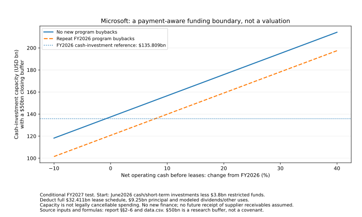

Is AI a Bubble? · Payer cash and spending flexibility
Strong customers, less effortless funding
The businesses paying for AI can protect their suppliers. That does not make the investment bill effortless—or easy to cancel.
Strong customers help. The next question is what they must keep paying.
The paying businesses provide real protection for parts of the AI build-out. Their resources do not establish that all planned investment is self-financing, easily reversible or rewarding for shareholders. Microsoft and Meta have substantial operating businesses and accumulated resources. Those can sustain contracted purchases even when a particular AI investment disappoints. The pressure can first reach distributions, new orders and additional financing rather than an existing supplier invoice.
That is a stronger favorable conclusion than treating every infrastructure project as dependent on a speculative start-up. It is a narrower conclusion than assuming large parents can reduce spending whenever they choose. Cash already spent, supplier bills already incurred, contracted purchases and uncommitted plans are different things. A calculation showing affordable spending is not evidence that the required cuts are contractually available.
Three findings make the distinction concrete. Microsoft’s full fiscal-2027 lease-payment perimeter is $32.411bn, not just the $13.203bn in its commenced-lease table. Meta’s seasonally matched budget can fund a substantial second half, but continued high spending in 2027 needs materially more cash, changed uses or financing. Oracle’s strong operating cash includes large customer advances while new equity also supports its resource pool. Microsoft FY2026 annual filing · Meta 2025 annual filing · Meta June 2026 quarterly filing · Oracle August 2026 quarterly filing
The contract check supplies a specific limit on “just cancel the spending”: the IREN–Microsoft agreement expressly disapplies the generic purchase-order termination clause. This is a finding about that negotiated document, not proof that every purchase is irreversible. Microsoft / IE US Hardware 3 statement of work
Economic mechanism · no probabilities or amounts
Protection for a supplier can become a constraint on its customer
On a narrow screen, scroll the figure horizontally.
Whole-pool assessment: commercial substance and strong-payer protection remain credible. Effortless funding and cheap spending reversibility are less well supported. Neither a resource shortfall in a stipulated budget nor the existence of a large commitment establishes insolvency. The unresolved question is how actual collections, lease starts, capital payments and effective spending changes fit together.
Scope: the U.S.-centered commercial generative/frontier-AI build-out, with Microsoft and Meta as the principal payer cases and Oracle as a bounded contrast. These are whole-company cash accounts—not an AI-only total, an industry funding deficit, a securities recommendation or a legally executable minimum-spending plan.
Start with where the money actually came from
A cash statement first reconciles a stock of cash: beginning balance plus operating, investing and financing flows, with currency effects, equals the ending balance. It does not normally identify which exact customer dollar financed which campus. Cash is fungible, and a parent can simultaneously fund investment, repay debt and return money to owners.
| Entity and period | Beginning | Operating | Investing | Financing | FX | Ending |
|---|---|---|---|---|---|---|
| Microsoft FY2024 | 34.704 | 118.548 | −96.970 | −37.757 | −0.210 | 18.315 |
| Microsoft FY2025 | 18.315 | 136.162 | −72.599 | −51.699 | 0.063 | 30.242 |
| Microsoft FY2026 | 30.242 | 182.935 | −139.500 | −52.546 | −0.196 | 20.935 |
| Meta calendar 2023 | 15.596 | 71.113 | −24.495 | −19.500 | 0.113 | 42.827 |
| Meta calendar 2024 | 42.827 | 91.328 | −47.150 | −40.781 | −0.786 | 45.438 |
| Meta calendar 2025 | 45.438 | 115.800 | −102.003 | −20.370 | 0.235 | 39.100 |
Microsoft’s fiscal years end in June; Meta’s calendar years end in December. Microsoft’s cash statement and Meta’s cash-and-restricted-cash statement have different perimeters. They are not directly comparable unrestricted liquidity balances, and these periods must not be pooled as if they were one contemporary year. Microsoft FY2026 annual filing · Meta 2025 annual filing
The earlier years matter. Microsoft’s fiscal-2024 investing outflow includes $69.132bn of acquisitions; it cannot all be labeled AI construction. Meta’s 2025 nonmarketable investment purchases were $18.330bn, a separate use from physical capital. Buying or selling securities also moves cash without being a corresponding change in operating profits. The ledger retains the component lines instead of attributing every investing movement to data centers. Microsoft FY2026 annual filing · Meta 2025 annual filing
| Entity / year | Beginning | Operating | Investing | Financing | FX | Ending |
|---|---|---|---|---|---|---|
| Microsoft 2025 | 17.482 | 79.691 | −43.286 | −23.880 | 0.235 | 30.242 |
| Microsoft 2026 | 24.296 | 102.120 | −82.236 | −23.130 | −0.115 | 20.935 |
| Meta 2025 | 45.438 | 49.587 | −45.968 | −35.472 | 0.243 | 13.828 |
| Meta 2026 | 39.100 | 64.088 | −83.331 | 9.414 | 0.000 | 29.271 |
Microsoft’s six-month flows are reconstructed from its full fiscal year less the preceding July–December statement. Beginning and ending cash are selected from the right dates, not derived by subtracting stocks. Meta provides the six-month comparison directly. Their operating cash grew, but their financing responses differ. Microsoft FY2026 annual filing · Microsoft FY2026 second-quarter results · Meta June 2026 quarterly filing
Meta’s first-half 2026 financing inflow of $9.414bn includes $24.910bn of net debt proceeds, offset by $8.704bn of employee-equity tax settlement, $2.699bn of dividends, $1.805bn of finance-lease principal and $2.288bn of other financing uses. Program buybacks were zero, against $22.921bn in the corresponding 2025 half. That flexibility had already been used and was already identified in the financing investigation. It is not another future saving to subtract from a model that assumes no buybacks. Meta June 2026 quarterly filing · Financing and loss transmission
Meta’s $83.331bn investing outflow also includes $31.556bn of net marketable-security purchases alongside $49.113bn of cash property/equipment purchases and $2.662bn of other net uses. A transfer into securities is not the disappearance of the same amount of economic resources. Conversely, an ending investment balance is not evidence that the entire amount can be distributed without affecting operations. Meta June 2026 quarterly filing
Reported cash is not automatically available cash
| Company / observation | Reported or selected components | Resource used in the test | Boundary |
|---|---|---|---|
| Microsoft · 30 June 2026 | 20.935 cash + 55.908 short-term investments − 3.800 restricted investments | 73.043 | Another 7.500 of restricted investments lies outside this starting pool; do not deduct it again. |
| Meta · 30 June 2026 | 15.462 cash + 74.798 marketable securities | 90.260 | 13.809 restricted cash is separately excluded. Its 10.800 purchase escrow is not an extra deduction. |
| Oracle · 31 August 2026 | 36.369 cash + 0.708 marketable securities | 37.077 | The cash-flow total including restricted cash is 38.934, not the available resource pool. |
These are dated resource proxies, not September 27 bank balances or independently established distributable surplus. Securities carry market and operating-liquidity considerations. A later inspection date does not move the financial statement forward. Microsoft FY2026 annual filing · Meta June 2026 quarterly filing · Oracle August 2026 quarterly filing
Microsoft’s component-purchase receivables rose from approximately $8.2bn to $27.8bn. Its $19.861bn net other-investing outflow is linked by management chiefly to facilitating server-component purchases, but the whole line is not independently identified as a single activity. The funding test includes the outflow in its reference investment/procurement budget; it does not add assumed future receivable collections as free cash. Microsoft FY2026 annual filing · Microsoft FY2026 fourth-quarter earnings call
Microsoft’s $24.1bn of recognized OpenAI-related revenue and approximately $6bn receivable likewise do not establish identical-period collections, nor do receivables prove nonpayment. Meta’s marketable securities increased by $29.079bn while net purchases were $31.556bn. The $2.477bn stock/flow difference is not silently converted into another receipt. Microsoft FY2026 annual filing · Meta June 2026 quarterly filing
Operating cash also carries timing. Microsoft’s fiscal-2026 cash taxes were $21.188bn versus about $28.7bn in fiscal 2025. Meta’s first-half cash taxes fell from $5.544bn to $1.999bn. That $3.545bn difference is roughly 24% of Meta’s operating-cash increase, but it is not a causal decomposition of all the growth or proof of a permanent benefit. The scenarios show an explicit reversal rather than relabeling reported cash “normalized.” Microsoft FY2026 annual filing · Meta June 2026 quarterly filing
Ownership-model continuity. The earlier Microsoft valuation permissively credited $76.843bn of cash and short-term investments. The payer budget here excludes the identified $3.8bn restriction and starts at $73.043bn. This is a clearer resource perimeter, not a silent recomputation of the earlier required revenue-growth result. The frozen valuation inputs and their limitations remain available. Ownership prices and cash requirements
Economic investment and bank payments answer different questions
A finance lease can acquire productive assets without a cash purchase at that moment. It still creates future payments. An investment-return model and a period cash budget must handle that difference consistently: charging a new leased asset as investment and then charging repayment of the same financing as another investment would count twice.
| Measure | FY2024 | FY2025 | FY2026 | Meaning |
|---|---|---|---|---|
| Cash property/equipment purchases | 44.477 | 64.551 | 115.948 | Actual cash outflow |
| New finance-lease assets | 11.633 | 20.511 | 24.608 | Economic asset acquisition, not the same-period cash purchase |
| Finance-lease principal paid | 1.286 | 2.283 | 3.101 | Financing cash payment |
| Finance-lease cash interest | 0.734 | 1.372 | 2.547 | Already inside operating cash |
| Operating-lease cash | 3.550 | 4.931 | 6.443 | Already inside operating cash |
Fiscal-2026 cash purchases plus new leased assets are $140.556bn. Cash purchases plus lease principal are $119.049bn. Their $21.507bn difference is a difference of timing and measurement, not missing cash. The ownership model charges economic leased investment and recognizes the financing claim. The funding model instead restores the historical lease cash already deducted in operating cash, then deducts the fuller future lease-payment schedule once. Microsoft FY2026 annual filing · Ownership prices and cash requirements
Incurred equipment bills matter too: approximately $26.7bn at Microsoft, $19.502bn at Meta and $6.247bn at Oracle in the selected statements. An unpaid bill is not an uncommitted new project. But adding the entire stock of bills to a future cash-capital budget that already pays them would overstate uses. The necessary mapping remains incomplete. Microsoft FY2026 annual filing · Meta June 2026 quarterly filing · Oracle August 2026 quarterly filing
Nor is depreciation a measured maintenance budget. Asset composition and disclosed useful lives show a larger installed base, but do not establish the cash required to preserve future service. Microsoft’s building-life change does not mean GPUs last 25 years. Treating the whole construction peak as permanent maintenance would be too pessimistic; assuming replacement falls to zero would be too favorable. The investment-normalization path in the ownership test therefore remains a condition to establish, not a fact supplied by an accounting life. Microsoft FY2026 annual filing · Microsoft FY2026 fourth-quarter earnings call · Ownership prices and cash requirements
Which spending can actually change?
The useful categories are cash already spent; supplier liabilities already incurred; future purchases and leases with enforceable conditions; conditional developments; uncommitted plans; and shareholder distributions. Management guidance is not necessarily a legal obligation. An off-balance-sheet commitment is not necessarily optional. Keeping service reliable can also require spending even when a document does not state a fixed maintenance minimum.
Contractual schedule · Microsoft fiscal year ending June 2027
The shorter lease table misses part of the payment bill
On a narrow screen, scroll the figure horizontally.
| Category | Scheduled amount | How it enters the analysis |
|---|---|---|
| Debt principal | 9.250 | Separate cash payment |
| Debt interest | 1.405 | Already represented within the operating-cash convention; not deducted twice |
| Construction | 29.848 | Must be mapped within the cash-investment budget |
| All lease payments | 32.411 | Replaces the narrower commenced-lease deduction |
| Purchases | 169.008 | Open orders and take-or-pay arrangements; operating/capital and cancellation mix unresolved |
The total $241.922bn is not another bill to place on top of operating costs, capital spending and leases already modeled. The full lease schedule has a further $411.095bn after fiscal 2027. Its difference from the commenced totals approximately reconciles to $329.1bn of uncommenced leases, starting across fiscal 2027–2033. This is evidence of future payment demands, not current funded debt. Microsoft FY2026 annual filing
IREN–Microsoft contract · effective November 2025
The negotiated amendment matters more than boilerplate
On a narrow screen, scroll the figure horizontally.
The particular IREN bargain: after acceptance, the service-fee commitment is not simply a charge for the customer’s actual use. Section 6 generally retains remaining contract-value payment obligations on termination, subject to its specified exceptions. Cause, delivery failure, service credits and convenience cannot be treated as the same event. Exhibit F expressly disapplies the generic purchase-order provisions, including Exhibit K §14’s termination route. Standard procurement boilerplate cannot therefore establish a cheap exit from this capacity contract. Microsoft / IE US Hardware 3 statement of work
That does not make the agreement immune to all remedies, amendments or performance disputes. Redacted terms prevent a complete exit-price calculation, and the analysis does not predict court outcomes. Qualifying delayed starts can extend service end dates to preserve aggregate fees under §3.2(e); that protects the fee total without making delay costless or changing lender maturity automatically. Microsoft / IE US Hardware 3 statement of work · Physical capacity and investment recovery
Meta’s noncancelable commitments total about $349.310bn, including $53.520bn in the remainder of 2026 and $81.650bn in 2027. They mix cloud/operating and capital purchases. The $278.990bn uncommenced leases, later July $68bn of leases and the separate $14.720bn contingent cloud arrangement also have different conditions and starts. Resale by a provider can reduce the latter exposure; it is not a general unilateral cancellation right for all commitments. Meta June 2026 quarterly filing
These obligations constrain “just slow spending,” but they cannot be added again wholesale to operating cash and capital budgets. Meta’s older fixed lease-maturity table excludes relevant variable payments and later leases. Neither it nor annual capital guidance supplies the complete legal cash floor. A power contract without a fixed purchase minimum also does not make energy unnecessary to keep a delivered service operating. Meta 2025 annual filing · Meta June 2026 quarterly filing · Meta second-quarter results and capital outlook
Microsoft: payment-aware funding capacity, not an executable cut list
The fiscal-2027 test begins at the June 2026 resource boundary, not a purported September balance. It first asks what resources remain under explicit choices, without new uncommitted finance. Sound investment need not be entirely internally funded; this first comparison isolates the need for drawdown, changes in uses or new capital.
| Input | Amount | Status |
|---|---|---|
| Starting resources | 73.043 | June cash/short-term investments less the identified restriction |
| Net operating cash before leases | 191.925 | FY2026 OCF 182.935 plus 6.443 operating-lease cash and 2.547 finance-lease interest; not gross receipts |
| Investment/procurement reference | 135.809 | FY2026 cash PPE 115.948 plus net other-investing use 19.861; not a pure capex forecast |
| Full lease payments + debt principal | 41.661 | 32.411 + 9.250, observed fiscal-2027 schedule |
| Dividends and other selected uses | 35.885 | Policy/timing assumptions described below |
| Program buyback alternative | 16.719 | Repeat the FY2026 program amount, or assume no new program purchases |
| Illustrative closing buffer | 50.000 | Research convention, not a covenant or minimum safe balance |
The $35.885bn includes $28.590bn of modeled dividends, $5.552bn of non-program share repurchase cash and $1.743bn of acquisitions. The dividend calculation retains the declared September total, then applies $0.98 to the dated share count for three quarters. Only the December rate was newly declared; subsequent repeats and an unchanged count are assumptions. The non-program amount is the difference between the cash-statement repurchase total and the program disclosure. None of these choices turns historical expenditure into a forecast. Microsoft FY2026 annual filing · Microsoft September dividend declaration
Ending resources = starting resources + net operating cash before leases − investment/procurement − full lease payments and principal − selected other uses − program buybacks − additional uses + new finance.
| Operating/investment assumptions | Program policy | Ending resources | Difference from $50bn target |
|---|---|---|---|
| Reference cash and investment repeat | Repeat program | 34.894 | 15.106 below |
| Reference cash and investment repeat | No new program | 51.613 | 1.613 above |
| Reference cash, but earlier cash-tax level returns | No new program | 44.101 | 5.899 below |
| Net prelease cash +20%; investment +10% | No new program | 76.417 | 26.417 above |
| Same favorable operating/investment path | Repeat program | 59.698 | 9.698 above |
The favorable path is serious: operating cash rises faster than investment while the full stated lease bill and modeled shareholder uses are retained. It requires no new financing in this calculation. It is not management cash guidance. The tax reset separately reduces cash by about $7.512bn; it does not assume all working-capital and tax effects must reverse together. Microsoft FY2026 annual filing
Supplied funding-sensitivity figure · conditional fiscal-2027 test
Cash growth and shareholder distributions change the room for investment
On a narrow screen, scroll the figure horizontally.

Holding the full initial $73.043bn resource pool, rather than allowing it to decline to the illustrative $50bn buffer, requires $213.355bn of net cash before leases—about 11.17% above the reference. The choice of target changes the required cash, not the actual cash reported by Microsoft. A zero target would be a more permissive arithmetic boundary, not a judgement that zero liquidity is operationally acceptable.
A resource ceiling is not a cancellation plan. At flat operating cash and no program buybacks, the model permits $137.422bn of cash investment while preserving its buffer. Yet scheduled construction and purchase commitments total $198.856bn. For the model to be feasible, at least $61.434bn of that total must already be covered by operating costs, or be subject to valid timing/reduction adjustments. The supplied disclosures do not establish that split. This is a quantified reconciliation requirement—not $61.434bn of demonstrated discretionary cuts.
Written as a check: $198.856bn − operating-cost overlap − effective permissible adjustments ≤ $137.422bn. Incurred payables and every other claimed saving must be mapped consistently too. Adding commitments twice exaggerates demands; declaring the unmapped difference optional exaggerates flexibility. Microsoft FY2026 annual filing
New funding changes the resource boundary but brings another claim. With an assumed 6% cash financing cost paid in the same period, the $15.106bn target gap in the repeat-program case would require about $16.070bn of new net funds; the tax-reset/no-program case needs about $6.276bn. The formula is gap ÷ (1 − cash financing rate). These are not bank quotes or available committed facilities. No proceeds are inserted simply because a strong issuer may be able to borrow.
The next lease-start year matters. Fiscal-2028 commenced payments total $11.628bn, but additional commencing lease cash is unknown. Carry the flat case’s $51.613bn forward, hold operating cash and investment at the same level, assume four dividends at the stated rate and preserve $50bn: at most $9.698bn remains for additional lease cash beyond that commenced schedule. Carry the favorable state forward instead and the bound is $59.306bn. Growth is not compounded again; other unmodeled uses reduce either amount dollar for dollar. Microsoft FY2026 annual filing · Microsoft September dividend declaration
The known lease pipeline cannot be spread evenly to manufacture the missing annual schedule. Nor does either bound establish a breach. It identifies the next disclosure needed to distinguish a workable resource path from a plan that relies on still more cash, lower other uses or financing.
Meta: match the season, then test whether funding can continue
The earlier financing chapter compared the next half with the just-completed half. This test adds a seasonally matched reference and a following-year continuation. The historical first-half cash, debt proceeds and already-used buyback reduction remain the same evidence; the method is more complete, not a newly observed outcome. Financing and loss transmission
Starting resources are $90.260bn at June 30. The $24.910bn May financing inflow is already reflected there and is not added again. Restricted cash, including the $10.8bn purchase escrow, is excluded. Conditional El Paso proceeds are not counted as a completed receipt. The 2026 capital outlook includes finance-lease principal, so that principal is not deducted again. Meta June 2026 quarterly filing · Meta second-quarter results and capital outlook
| Item | Amount | Treatment |
|---|---|---|
| Seasonally matched operating cash | 66.213 | 2025 full-year OCF 115.800 less first-half OCF 49.587 |
| Capital already paid in H1 2026 | 50.918 | Cash PPE 49.113 + finance-lease principal 1.805 |
| Remaining capital at low/high annual outlook | 79.082 / 94.082 | 130–145 full-year guidance less 50.918 already paid |
| Employee-equity tax settlement | 9.407 | Repeat the corresponding 2025 half |
| Dividends | 2.668 | Repeat the corresponding 2025 half |
| Other selected uses | 4.950 | Repeat the selected first-half investment/financing uses |
| Remainder-2026 debt principal | 0.000 | Note maturity schedule, not absence of all obligations |
“Flat” means the same operating cash as the second half of 2025, not a repeat of first-half 2026. The favorable path applies the observed 29.24% first-half year-on-year cash-growth rate to that seasonal base, yielding $85.576bn. This is a sensitivity, not a projection justified solely by recent growth. Operating interest, taxes and rents already in cash flow remain inside it. Meta 2025 annual filing · Meta June 2026 quarterly filing
| Operating cash assumption | Annual capital plan | Ending resources |
|---|---|---|
| Seasonally flat | 130 | 60.366 |
| Seasonally flat | 145 | 45.366 |
| Seasonally flat with $3.545bn tax reset | 145 | 41.821 |
| Matched-base cash +29.24% | 145 | 64.729 |
Completing the $145bn annual capital plan while ending with the illustrative $50bn buffer requires $70.847bn of H2 operating cash, about 7.0% above the corresponding 2025 period. Avoiding any drawdown of the starting pool requires $111.107bn instead. A $50bn convention is not a lender covenant, and a result below it is not a finding of insufficient legal liquidity.
The seasonally flat/high-capital case is $4.634bn below that target. If new financing incurred the same assumed 6% period cash cost, about $4.930bn of net funds would close it. With the tax reset, the $8.179bn gap needs about $8.701bn. These comparisons are alternatives to changing other uses—not assertions that the financing is already available or that the company will follow this policy.
Conditional continuation · not Meta guidance
A comfortable half-year is not a continuing funding plan
On a narrow screen, scroll the figure horizontally.
For 2027, hold capital use at an assumed $145bn—not management guidance—and test the $130.301bn trailing operating-cash reference against a $168.406bn favorable state. Carry forward either the $45.366bn or $64.729bn H2 ending pool. Retain $18.111bn employee-equity tax settlement, $5.367bn dividends, $9.900bn other modeled uses and $2.750bn debt principal. That produces the four distinct paths in the figure. Meta 2025 annual filing · Meta June 2026 quarterly filing
The strongest paired path ends at $52.007bn: only $2.007bn above the chosen buffer before extra unmodeled uses. At unchanged trailing operating cash, even the more favorable starting pool ends at $13.902bn. With the lower starting pool and unchanged operating cash, the arithmetic ends negative. That identifies assumptions that cannot coexist without adjustment; it is not a predicted bankruptcy, default date or observed loss.
To preserve $50bn while spending $145bn, required 2027 operating cash is $185.762bn from the lower opening pool or $166.399bn from the higher one. The corresponding affordable capital amounts under the four paths range from $89.539bn to $147.007bn. Those are resource ceilings, not proof that spending can legally be cut to any selected amount. New lease cash, reserve restrictions or other commitments not already represented would reduce the room.
Meta’s strong underlying business and long-dated borrowing therefore remain genuine protections for its suppliers. But continuation is conditional on cash growth, use of accumulated resources, effective changes to spending, or continued financing. The fact that no 2026 note principal is due cannot settle a budget containing large operating purchases and capital payments. Meta June 2026 quarterly filing · DBRS analysis of the CoreWeave project borrower
Oracle: advances are funding, not free operating profit
Oracle is deliberately a separate quarterly contrast. June–August does not match the Microsoft/Meta half-year, and its figures are not added to theirs. The full August quarterly statement replaces the earlier reliance on a rounded release for this case. The annual filing route was not fully accessible in the supplied investigation; no complete annual reconstruction is claimed. Oracle August 2026 quarterly filing · Whole-system foundation
| Quarter | Beginning | Operating | Investing | Financing | FX | Ending |
|---|---|---|---|---|---|---|
| June–August 2025 | 10.786 | 8.140 | −8.718 | 0.210 | 0.027 | 10.445 |
| June–August 2026 | 31.289 | 23.103 | −28.580 | 13.111 | 0.011 | 38.934 |
Cash property/equipment purchases were $28.499bn in the 2026 quarter. Financing contributed $19.909bn of net at-the-market equity proceeds and $0.041bn employee-stock proceeds, offset by $1.565bn dividends, $0.830bn short-term capital-finance repayments, $4.202bn debt repayment and $0.242bn other financing uses. The resulting $13.111bn is financing, not customer demand. Oracle August 2026 quarterly filing
The operating-cash total has its own important source: $11.363bn of financing-component customer prepayments, alongside $3.997bn in the other deferred-revenue cash-flow line. The first amount is reported within operating cash; economically it supplies advance funding with future service and financing burdens. Removing only it leaves $11.740bn, but that is not normalized operating cash: working capital and other advance effects still remain. Oracle August 2026 quarterly filing
An advance can make investment easier to finance and reduce collection risk. It does not eliminate the cost of delivering the service later. When the provider recognizes prepaid revenue, it has not collected that same dollar again. This is a real financing advantage with a future performance obligation, not evidence that the sale is fictitious or that the whole advance is profit.
Observed resources plus retrospective fixed-uses counterfactuals
Customer advances and new equity both matter
On a narrow screen, scroll the figure horizontally.
The balance excluding restrictions is $36.369bn cash plus $0.708bn marketables. At unchanged actual uses, removing the $19.909bn equity receipt leaves $17.168bn; also removing the $11.363bn financing-component advance leaves $5.805bn. To preserve the May starting resource pool of $31.894bn after removing both sources would require $26.089bn of replacement funds under that fixed-uses comparison. The company could instead have altered spending or financing, so this is retrospective source dependence—not an alternative audited balance sheet.
Future payments also exceed a simple commenced-lease list. The selected commenced leases and qualifying unconditional purchases sum to $9.288bn for the remainder of fiscal 2027 and $11.163bn for fiscal 2028. A separate $288bn of uncommenced leases is expected to start from the second quarter of fiscal 2027 through fiscal 2029. Purchase commitments include a longer $34.150bn total and a qualifying agreement-length boundary. Neither the short list nor the lifetime total is a complete directly additive funding floor. Oracle August 2026 quarterly filing
Selling excess purchased products can recover value without cancelling the original obligation. Reliable power, further capital and service costs still matter. Oracle demonstrates how a real operating business can expand with customer advance funding and external equity together; it does not demonstrate that new capital will remain frictionless or that every future obligation is covered.
What this changes in the bubble question
The favorable case has a firmer payer foundation. Large operating businesses can keep honoring a particular protected contract despite weak returns on that purchase. Microsoft’s favorable cash/investment path preserves substantial resources without new finance; Meta’s favorable continuation can meet the modeled capital bill and chosen buffer. Oracle demonstrates actual access to customer and equity funding. These are serious alternatives to an automatic collapse narrative.
The effortless-funding claim is weaker. Complete lease perimeters, restricted resources and incurred supplier bills consume flexibility. A peak cash-flow period can contain favorable tax timing or customer advances. Stopping buybacks can help, but it cannot be “saved” twice after the policy has already changed. A customer contract that protects one recipient can be a fixed burden for the payer, and a resource capacity derived from an equation is not proof of cancellable contracts.
The most credible first pressure can therefore be lower distributions, fewer new orders, more expensive external finance or weaker ownership returns while existing contracted creditors continue to receive payment. A wider credit event requires additional demonstrated links: failed payment or performance, exhausted protections, impaired recovery and exposed holders whose own funding transmits the loss. No system-wide default probability follows from these corporate budgets.
The ownership investigation’s Microsoft result remains required revenue growth under its cash-capture and investment-fade assumptions. The funding work tests the resources and obligations relevant to that fade; it does not establish the fade or recalculate the frozen valuation. IREN’s required continuation/other-portfolio values remain requirements, not appraisals. The hypothetical private funding calls and margins are not converted into known company forecasts. Ownership prices and cash requirements · Physical capacity and investment recovery
The NVIDIA–Energy Global prepaid-forward correction is unchanged: the obligation is established; receipt remains unverified; nonpayment is not inferred. No receipt enters these calculations. CoreWeave’s September 22 note closing remains separately established, with $3.5708bn after purchaser discounts and capped calls before other expenses; that is not a current unspent balance or a new discovery here. Independent demand and monetization · CoreWeave September note-closing filing
| Earlier treatment | What is clearer now | What remains unresolved |
|---|---|---|
| Large-parent cash and broad funding comparisons | Complete cash reconciliations distinguish operating, investment, financing and restricted resources | AI-only allocation and current post-statement cash |
| Commenced lease schedules as a readily visible payment measure | The fuller Microsoft fiscal-2027 perimeter adds future-starting payments; restrictions narrow available resources | Complete fiscal-2028 starts and operating/capital mapping |
| Meta’s bounded half-on-half sensitivity | Seasonally matched H2 and next-year continuation test the duration of funding | Exact later lease cash and legally achievable reductions |
| General statements about procurement flexibility | The negotiated IREN amendment disapplies generic termination boilerplate | Redacted remedies and company-wide cancellation rights |
| Rounded Oracle cash discussion | Full quarterly statement separates financing-component advances and equity proceeds | A complete annual/source-to-project allocation and future repeatability |
These advances mostly come from fuller reconciliation and interpretation of already dated disclosures—not new September operating events. A supplied assumption stays an assumption even when it is plausible. The existing dated investigations remain accessible; the current answer incorporates the new constraints rather than treating earlier work as discredited.
The evidence that would settle the next disagreement
| Evidence to obtain | Would strengthen sustainable funding | Would strengthen concern / qualification |
|---|---|---|
| Microsoft purchase/construction mapping and fiscal-2028 lease starts | Documented operating-cost overlap, valid deferrals and manageable additional lease cash | An unmapped capital burden or new payments above the stated capacity; the calculated overlap is not an observed cut |
| Payer cash conversion across later reporting periods | Collected service cash holds up after tax, working-capital and lease timing changes | Advances or temporary timing effects fail to recur while uses remain fixed |
| Meta actual H2 and continuation uses | Seasonally comparable cash funds commitments with sufficient retained resources | Capital/lease demands or restrictions consume the small favorable cushion; end-period cash cannot establish every due-date payment |
| Oracle prepaid-service delivery and later financing | Advance-funded capacity becomes profitable delivered service; funding remains available on acceptable terms | Growing obligations without durable contribution, or external finance more costly than the investment can support |
| Actual amendments, cancellations and spending decisions | Specific reductions save cash without destroying the service or triggering larger payments | Boilerplate-based cancellation claims fail against operative terms or incurred supplier bills |
| Net owner cash after ongoing replacement | Productive capital supports both payment and adequate owner return | Suppliers are paid but ownership relies on continually favorable new finance |
The test is not whether every company can reproduce the last quarter indefinitely. It is whether actual payment and cost evidence supports a feasible path, with financing and spending decisions identified. A negative model result calls for changing assumptions or acquiring evidence; it does not establish a default date. A positive result calls for verifying omitted payments and intermediate timing, not declaring safety.
Methods, downloads and limits
This chapter presents the supplied documentary research and its reproducible arithmetic. The cases were selected for distinct funding mechanisms and links to existing recipient contracts, not as a representative sample of all AI. The financial statements and event dates remain their own observations; no later cutoff creates a complete current cash roll-forward.
Download the 386 source-linked inputs and assumptions · Download the calculation companion · Open the funding-flexibility figure.

The CSV is a reader adaptation of the frozen source ledger: numerical inputs, dates and statuses are retained; assumption pointers lead here. The standard-library Python companion reconstructs cash accounts, matched windows, resource restrictions, required funding and continuation cases. It uses USD millions internally and prints billions. Optional figure rendering needs Matplotlib. No live data, network request or automatic update is involved.
Three cash identities discipline the interpretation. Operating cash is net, not gross outside-customer receipts. Financing proceeds cannot be credited again after using a cash balance that already includes them. Operating/lease and capital commitments cannot be deducted again after the same payments enter the model. In contrast, a genuinely unmodeled payment, restriction or cost must reduce resources once. A change in buffer changes the test, not reported cash.
The greatest substantive gap is the operating-versus-capital allocation and effective cancellation status of aggregate commitments. Neither the Microsoft investment-capacity figure nor Meta’s continuation ceiling certifies a minimum-spending programme that could legally and operationally be implemented. Actual new lease cash, current resource balances, collection reversals, maintenance needs and project allocations remain incomplete.
The models simplify timing to annual or half-year windows. Securities are treated as a selected resource proxy, not all distributable cash. They use disclosed or modeled shareholder uses, no new uncommitted finance in the initial cases, and no additional undisclosed uses unless a sensitivity adds them. A positive terminal resource does not prove that every intermediate payment can be met. Funding-cost sensitivities are not market quotes, available facilities or legally required borrowing.
Source access was imperfect. The supplied investigation could not retrieve Oracle’s full May annual route and instead used the complete August quarterly statement. Some repeated requests failed after earlier successful inspection. Confidential models, project invoices, complete termination schedules and current borrower certificates were unavailable. These limits do not establish the absence of a payment or agreement.
The figure is a visual rendering of the funding model, not independent evidence. Different fiscal/calendar periods, restricted versus unrestricted balances, and reported versus assumed quantities remain visible. None of the scenarios is a valuation, asset appraisal, forecast of distress or personal investment recommendation.
Sources and inspection boundaries
Sources were inspected in the supplied investigation at the 27 September 2026 retrieval-day boundary. Their financial, publication and event dates below are not replaced by that date. Earlier investigations retain their own dates. External links are deliberate reader links, not automatic requests.
Microsoft FY2026 annual filing
Open source. Year ended 30 June 2026. Cash-flow statement, p.53; contractual obligations, p.44; restrictions and component receivables, Note 1 p.57; equipment and incurred payables, Note 6; tax, lease and distribution notes. The all-lease schedule includes future commencements. Reported short-term investments include $3.8bn restricted; another $7.5bn is outside that starting pool. No September bank balance or complete cancellation allocation is supplied.
Microsoft FY2026 second-quarter results
Open source. 28 January 2026. Six-month cash statements for July–December 2025 and 2024. Subtracted from the respective full fiscal-year flows to obtain January–June comparisons; beginning and ending cash stocks are selected, not subtracted.
Microsoft FY2026 fourth-quarter earnings call
Open source. 29 July 2026. Management explanations of demand, investment, component purchases and useful-life changes are attributed statements, not observed future cash or a contractual right to cancel the investment programme.
Microsoft September dividend declaration
Open source. 15 September 2026; $0.98 per share payable in December. Repeating that rate in subsequent undeclared quarters and holding the 23 July share count constant are modeling assumptions. The already-declared September payment remains in the fiscal-2027 budget.
Meta 2025 annual filing
Open source. Year ended 31 December 2025. Three-year cash accounts, lease definitions and distributions. December lease maturities are older schedules and exclude later commencements and relevant variable payments; they are not a complete current cash floor.
Meta June 2026 quarterly filing
Open source. Six months ended 30 June 2026. Cash accounts and restricted-cash reconciliation; debt and commitments in Notes 8–9; conditional subsequent transaction in Note 13. Marketable assets, restricted escrow, incurred equipment bills, future purchases and uncommenced leases have different boundaries. The models do not add overlapping commitments to operating and capital uses twice.
Meta second-quarter results and capital outlook
Open source. 29 July 2026. The $130–145bn calendar-2026 capital outlook includes finance-lease principal. It is management guidance, not a legal minimum, an AI-only total or 2027 guidance.
Oracle August 2026 quarterly filing
Open source. Quarter ended 31 August 2026, with the corresponding 2025 quarter. Full cash statement, p.5, and deferred-revenue, financing and lease/purchase notes. Financing-component customer prepayments are reported in operating cash; at-the-market equity proceeds are financing. The full May annual route was inaccessible in the supplied investigation, so this is a bounded quarterly contrast.
Microsoft / IE US Hardware 3 statement of work
Open source. Effective November 2025. Sections 3.2 and 6, Exhibit F and attached Exhibit K read together. Exhibit F disapplies the generic purchase-order provisions including §14; the operative arrangement retains specified performance, credit, termination and payment conditions. Public redactions do not establish every remedy amount or a judicial outcome.
DBRS analysis of the CoreWeave project borrower
Open source. 3 April 2026. Identifies Meta take-or-pay support and projected full amortization. A solicited underwriting opinion using private information, not independently observed current project collections, reserves or covenant compliance.
CoreWeave September note-closing filing
Open source. September 22 issuance described in the body, notwithstanding the filename. $4.2bn face includes the option; $4.137bn after purchaser discounts less $566.2m capped-call costs leaves $3.5708bn before remaining expenses. This closing was established in the ownership investigation, not discovered anew here; it is not current unspent cash.
Whole-system foundation
Open source. Broader financial evidence checked 18 September 2026. The matched parent ledger is not a current sector-wide AI-only cash census. Its earlier rounded Oracle discussion is complemented by the full quarterly reconciliation here.
Independent demand and monetization
Open source. Evidence checked 19 September 2026. Selected customer studies and payment evidence remain distinct from independently funded demand totals and complete provider margins. Its NVIDIA receipt correction remains controlling.
Financing and loss transmission
Open source. Evidence checked 20 September 2026, with later closing evidence separately noted. Contract-backed repayment and the earlier Meta half-on-half sensitivity remain dated. The seasonal and continuation tests here are different analyses, not realized outcomes.
Physical capacity and investment recovery
Open source. Evidence checked 22 September 2026. Equipment/full-cost distinctions, service-end extension and required continuation values remain unchanged. No residual appraisal or actual project return is supplied by this funding analysis.
Ownership prices and cash requirements
Open source. Evidence checked 26 September 2026; public prices fixed to September 24, with earlier statement/share dates. Required Microsoft revenue growth is not cash growth. Its permissive cash credit and investment fade remain explicit assumptions; this chapter does not silently revise the frozen valuation outputs.